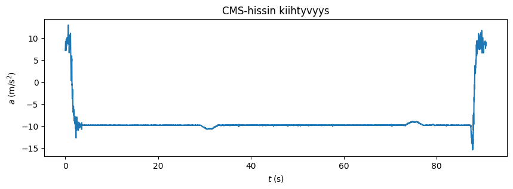
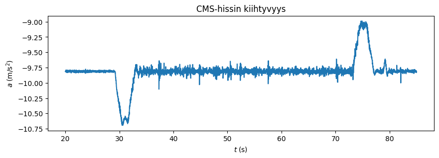
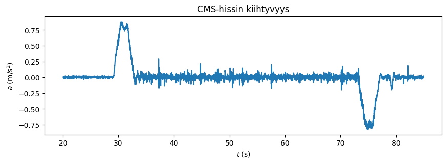
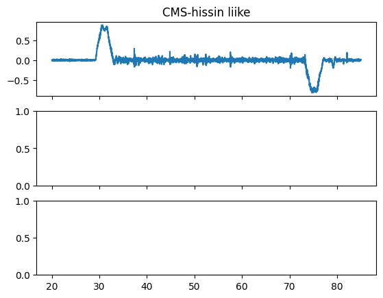

Kiihtyvyysmittauksia CMS-koeaseman hississä#
Tämä harjoite on esimerkki helposti tehtävästä mittaustyöstä analyyseineen. Alkuperäinen työ toteutettiin vuoden 2024 CERNin opettajakurssille osallistuneitten toimesta.
1. Työkalupaketit#
# Ladataan kirjastot
import pandas as pd
import numpy as np
import matplotlib.pyplot as plt
from scipy.stats import norm
from scipy import integrate
---------------------------------------------------------------------------
ModuleNotFoundError Traceback (most recent call last)
Cell In[1], line 5
3 import numpy as np
4 import matplotlib.pyplot as plt
----> 5 from scipy.stats import norm
6 from scipy import integrate
ModuleNotFoundError: No module named 'scipy'
2. Aineisto#
Avataan .csv-tiedosto, joka sisältää puhelimen Phyphox-ohjelmalla https://phyphox.org/ mitattua sensoridataa. Tarkastellaan miltä se näyttää. Data pitää sisällään puhelimen kiihtyvyysanturin mittaukset ajan suhteen, kun CMS-koeaseman hissillä tullaan alhaalta ylös.
df = pd.read_csv('https://raw.githubusercontent.com/opendata-education/Tyopajat/refs/heads/main/materiaali/data/CMS-hissi.csv', delimiter = ";")
df.head()
| Time (s) | Acceleration x (m/s^2) | Acceleration y (m/s^2) | Acceleration z (m/s^2) | Absolute acceleration (m/s^2) | |
|---|---|---|---|---|---|
| 0 | 0.000305 | 2.882256 | 2.801125 | 7.130572 | 8.185277 |
| 1 | 0.010345 | 2.936893 | 2.764751 | 7.305109 | 8.344687 |
| 2 | 0.020386 | 3.086432 | 2.800526 | 7.694449 | 8.750632 |
| 3 | 0.030428 | 3.043022 | 2.689158 | 8.039182 | 9.006665 |
| 4 | 0.040470 | 3.007695 | 2.600542 | 8.414153 | 9.306289 |
# Acceleration z (m/s^2) on kiihtyvyys puhelimen näyttöön kohtisuorassa suunnassa, eli suunta josta olemme kiinnostuneita.
# Time (s) on kulunut aika.
# Poistetaan ylimääräinen data pudottamalla turhat sarakkeet muuttujasta df.
df.drop(columns = ['Acceleration x (m/s^2)', 'Acceleration y (m/s^2)',"Absolute acceleration (m/s^2)"], inplace = True)
3. Analyysi#
# Tarkastellaan datasta alkuun, miltä kiihtyvyys näyttää ajan funktiona.
fig = plt.figure(figsize = (10,3))
plt.plot(df['Time (s)'], df['Acceleration z (m/s^2)'])
plt.xlabel(r'$t\;(\text{s})$')
plt.ylabel(r'$a\;(\text{m/s}^2$)')
plt.title('CMS-hissin kiihtyvyys')
plt.show()

Datasta voidaan päätellä, että puhelin on aluksi ollut näyttö kohden taivasta, minkä jälkeen puhelin on käännetty ylösalaisin ja asetettu hissin lattialle.
# Valitaan datasta tämän takia tarkasteluun väli aikaväli 20-85 s, jolloin
# puhelin on alussa vielä paikoillaan, näyttö kohden hissin lattiaa ja hissi on
# vielä paikoillaan.
df = df.loc[(df['Time (s)'] >= 20) & (df['Time (s)'] <= 85)]
# Tarkastellaan dataa valitulla välillä.
fig = plt.figure(figsize=(10,3))
plt.plot(df['Time (s)'], df['Acceleration z (m/s^2)'])
plt.xlabel(r'$t\;(\text{s})$')
plt.ylabel(r'$a\;(\text{m/s}^2$)')
plt.title('CMS-hissin kiihtyvyys')
plt.show()

Huomataan, että anturi ilmoittaa kiihtyvyydeksi paikallaan ollessaan noin -9,8 $m/s^2$. Poistetaan tämä esityksestämme määrittämällä keskiarvo kiihtyvyydestä välillä 20-29 s, kun hissi on paikallaan ennen liikkeelle lähtöä.
# Lasketaan keskiarvo tuolta ajalta ja poistetaan se datasta.
# lisäksi käännetään samalla sensorin suunta ottamalla vastaluvut.
a_err = df.loc[df['Time (s)'] <= 29, 'Acceleration z (m/s^2)'].mean()
df.insert(len(df.columns),'Acceleration (m/s^2)',df.loc[:,'Acceleration z (m/s^2)']*(-1)+a_err)
df.head()
| Time (s) | Acceleration z (m/s^2) | Acceleration (m/s^2) | |
|---|---|---|---|
| 1992 | 20.002644 | -9.813143 | 0.001534 |
| 1993 | 20.012685 | -9.813443 | 0.001833 |
| 1994 | 20.022727 | -9.815838 | 0.004228 |
| 1995 | 20.032768 | -9.818832 | 0.007222 |
| 1996 | 20.042809 | -9.816886 | 0.005276 |
# Tarkastellaan dataa korjatulla kiihtyvyyden arvolla.
fig = plt.figure(figsize=(10,3))
plt.plot(df['Time (s)'], df['Acceleration (m/s^2)'])
plt.xlabel(r'$t\;(\text{s})$')
plt.ylabel(r'$a\;(\text{m/s}^2$)')
plt.title('CMS-hissin kiihtyvyys')
plt.show()

# Määritetään nopeus integroimalla numeerisesti kiihtyvyysdataa ajan suhteen.
velocities = integrate.cumulative_trapezoid(df['Acceleration (m/s^2)'], x=df['Time (s)'], axis=0, initial=0)
df.insert(len(df.columns),'Velocity (m/s)', velocities)
# Määritetään korkeus integroimalla numeerisesti nopeus ajan suhteen.
elevation = integrate.cumulative_trapezoid(df['Velocity (m/s)'], x=df['Time (s)'], axis=0, initial=0)
df.insert(len(df.columns),'Elevation (m)', elevation)
df.head()
---------------------------------------------------------------------------
NameError Traceback (most recent call last)
Cell In[9], line 3
1 # Määritetään nopeus integroimalla numeerisesti kiihtyvyysdataa ajan suhteen.
----> 3 velocities = integrate.cumulative_trapezoid(df['Acceleration (m/s^2)'], x=df['Time (s)'], axis=0, initial=0)
4 df.insert(len(df.columns),'Velocity (m/s)', velocities)
6 # Määritetään korkeus integroimalla numeerisesti nopeus ajan suhteen.
NameError: name 'integrate' is not defined
# Piirretään kuvaaja hissin liikkeestä.
fig, (ax1, ax2, ax3) = plt.subplots(3, sharex=True)
fig = plt.figure(figsize=(10,9))
ax1.set_title('CMS-hissin liike')
ax1.plot(df['Time (s)'], df['Acceleration (m/s^2)'])
ax2.plot(df['Time (s)'], df['Velocity (m/s)'])
ax3.plot(df['Time (s)'], df['Elevation (m)'])
ax1.set_ylabel('$a$ (m/s$^2$)')
ax2.set_ylabel('$v$ (m/s)')
ax3.set_ylabel('$h$ (m)')
ax3.set_xlabel('$t$ (s)')
plt.show()
---------------------------------------------------------------------------
KeyError Traceback (most recent call last)
File /opt/hostedtoolcache/Python/3.13.3/x64/lib/python3.13/site-packages/pandas/core/indexes/base.py:3805, in Index.get_loc(self, key)
3804 try:
-> 3805 return self._engine.get_loc(casted_key)
3806 except KeyError as err:
File index.pyx:167, in pandas._libs.index.IndexEngine.get_loc()
File index.pyx:196, in pandas._libs.index.IndexEngine.get_loc()
File pandas/_libs/hashtable_class_helper.pxi:7081, in pandas._libs.hashtable.PyObjectHashTable.get_item()
File pandas/_libs/hashtable_class_helper.pxi:7089, in pandas._libs.hashtable.PyObjectHashTable.get_item()
KeyError: 'Velocity (m/s)'
The above exception was the direct cause of the following exception:
KeyError Traceback (most recent call last)
Cell In[10], line 9
6 ax1.set_title('CMS-hissin liike')
8 ax1.plot(df['Time (s)'], df['Acceleration (m/s^2)'])
----> 9 ax2.plot(df['Time (s)'], df['Velocity (m/s)'])
10 ax3.plot(df['Time (s)'], df['Elevation (m)'])
12 ax1.set_ylabel('$a$ (m/s$^2$)')
File /opt/hostedtoolcache/Python/3.13.3/x64/lib/python3.13/site-packages/pandas/core/frame.py:4102, in DataFrame.__getitem__(self, key)
4100 if self.columns.nlevels > 1:
4101 return self._getitem_multilevel(key)
-> 4102 indexer = self.columns.get_loc(key)
4103 if is_integer(indexer):
4104 indexer = [indexer]
File /opt/hostedtoolcache/Python/3.13.3/x64/lib/python3.13/site-packages/pandas/core/indexes/base.py:3812, in Index.get_loc(self, key)
3807 if isinstance(casted_key, slice) or (
3808 isinstance(casted_key, abc.Iterable)
3809 and any(isinstance(x, slice) for x in casted_key)
3810 ):
3811 raise InvalidIndexError(key)
-> 3812 raise KeyError(key) from err
3813 except TypeError:
3814 # If we have a listlike key, _check_indexing_error will raise
3815 # InvalidIndexError. Otherwise we fall through and re-raise
3816 # the TypeError.
3817 self._check_indexing_error(key)
KeyError: 'Velocity (m/s)'

<Figure size 1000x900 with 0 Axes>
# Muutos korkeudessa, joka hissillä noustessa tehtiin.
print(df["Elevation (m)"].max(),"metriä")
---------------------------------------------------------------------------
KeyError Traceback (most recent call last)
File /opt/hostedtoolcache/Python/3.13.3/x64/lib/python3.13/site-packages/pandas/core/indexes/base.py:3805, in Index.get_loc(self, key)
3804 try:
-> 3805 return self._engine.get_loc(casted_key)
3806 except KeyError as err:
File index.pyx:167, in pandas._libs.index.IndexEngine.get_loc()
File index.pyx:196, in pandas._libs.index.IndexEngine.get_loc()
File pandas/_libs/hashtable_class_helper.pxi:7081, in pandas._libs.hashtable.PyObjectHashTable.get_item()
File pandas/_libs/hashtable_class_helper.pxi:7089, in pandas._libs.hashtable.PyObjectHashTable.get_item()
KeyError: 'Elevation (m)'
The above exception was the direct cause of the following exception:
KeyError Traceback (most recent call last)
Cell In[11], line 3
1 # Muutos korkeudessa, joka hissillä noustessa tehtiin.
----> 3 print(df["Elevation (m)"].max(),"metriä")
File /opt/hostedtoolcache/Python/3.13.3/x64/lib/python3.13/site-packages/pandas/core/frame.py:4102, in DataFrame.__getitem__(self, key)
4100 if self.columns.nlevels > 1:
4101 return self._getitem_multilevel(key)
-> 4102 indexer = self.columns.get_loc(key)
4103 if is_integer(indexer):
4104 indexer = [indexer]
File /opt/hostedtoolcache/Python/3.13.3/x64/lib/python3.13/site-packages/pandas/core/indexes/base.py:3812, in Index.get_loc(self, key)
3807 if isinstance(casted_key, slice) or (
3808 isinstance(casted_key, abc.Iterable)
3809 and any(isinstance(x, slice) for x in casted_key)
3810 ):
3811 raise InvalidIndexError(key)
-> 3812 raise KeyError(key) from err
3813 except TypeError:
3814 # If we have a listlike key, _check_indexing_error will raise
3815 # InvalidIndexError. Otherwise we fall through and re-raise
3816 # the TypeError.
3817 self._check_indexing_error(key)
KeyError: 'Elevation (m)'
4. Johtopäätökset#
Tavallisella kännykällä saatiin aika uskottavasti näkyviin kuinka tyypillinen hissi saadaan liikkeelle ja uudelleen lepoon määränpäässään. Voidaanko liikkeen sanoa olleen tasaista vai kiihtyvää matkan aikana?